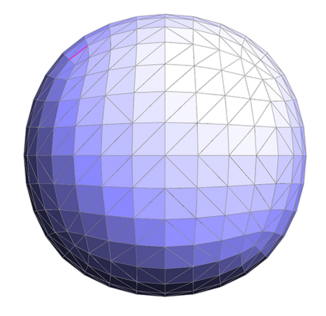
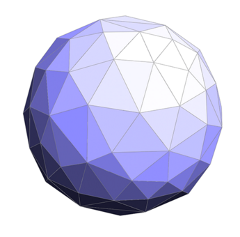

Aaron Perley (aperley) and Siddhant Madhuk (smadhuk)
 We are going to implement triangle mesh global upsample, downsample, and resample operations on the GPU. We will use the halfedge data structure to represent the triangle mesh.
Halfedge triangle meshes are used in computer graphics to represent surfaces in three dimensions. When a mesh has more vertices and edges than are necessary to effectively model a shape, downsampling can be used to collapse unnecessary edges. Although it is not possible to determine a completely optimized edge collapse order, the quadric error metric developed by Michael Garland and Paul Heckbert provides a heuristic to determine good edge collapse candidates. The basic algorithm computes a quadric error score for each edge and then uses a priority queue to iteratively collapse the edges with the best score. After each edge is collapsed, other edges may also be removed and the heuristic score for some edges may need to be updated. This introduces many opportunities for parallelism. Trivially, we can parallelize the computation of the quadric error scores for each edge. In addition, we will also collapse edges and update quadric error scores in parallel. This will require synchronization between threads to maintain correctness and provides an opportunity to test different work partitioning schemes.
This problem is challenging since removing edges in a halfedge mesh in parallel requires synchronization so that a thread is not trying to traverse or remove edges that another thread has removed or edited. We will investigate the performance of different synchronization techniques including coarse-grained locks on the entire data structure, fine-grained locks on individual mesh elements, transactional memory operations, as well as lock free solutions that ensure that conflicting updates never occur. We will also investiage different work and spacial partitioning schemes, to ensure that synchronization between threads is relatively infrequent. Finally, traversing the halfedge data structure can have very incoherent memory access.
The starter code that we will be working with will be from assignment 2 from 15-462, MeshEdit. The code contains a serial solution to the probelem that we are trying to tackle and we will be using it as a reference while writing our parallel code. We will start by working on the six-core Xeon e5 in the lateday cluster initially and also the Xeon Phi to see which gives us better performance. We will be looking at the difference in performance obtained when we use different methods of synchronizations across the two machines and as we use different implementations for our code. Then we will investigate the performance of our code when it has been ported to the CUDA language so it can work on NVIDIA GPUs.
Our goals for the project are:
Our problem ends up being IO-bound rather than bound computationally. Since problems that are bound by IO are usually better suited for CPU tasks, we will be implementing our code on the latedays cluster first. We will then later check the performance of our code on the GPUs of the Gates, but this will be a secondary objective in nature.